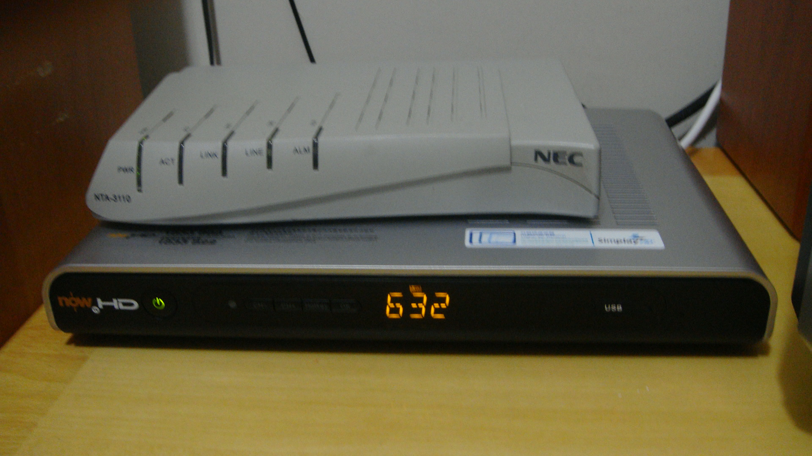

Historia de la World Wide Web y Aplicaciones Móviles
En el siguiente capítulo detallaremos los inicios de la comunicación a distancia y las diferentes tecnologías utizadas hasta la actualidad.
Mensajes con Banderas
El Código Internacional de Señales de la OMI (Organización Marítima Internacional), esta basado en banderas destinado a transmitir mensajes, ya sea entre dos o más barcos, o entre un barco y la tierra o el puerto, en el cual cada letra o grupo de letras, representadas por banderas, tiene un significado particular. Es el código adoptado internacionalmente.
Desde que existe la comunicación por radio, el uso de las banderas de señales para transmitir mensajes ha disminuido notablemente. Sin embargo, se siguen utilizando de forma generalizada las banderas individuales o en combinaciones de dos, para señalizar un aviso determinado.
Mensajes con señales semáforo
El sistema de "señales semáforo", está basado en dos banderas iguales sostenidas una en cada mano del operador, formando distintas posiciones con respecto al cuerpo, era muy utilizado para comunicación diurna antes de la comunicación por radio, hoy en desuso, es solamente una opción de emergencia.
Este es un código de deletreo de mensajes, para el cual se utilizan dos banderas Oscar. Durante la noche, la comunicación de emergencia se realiza con luces por medio de código Morse.

Código Morse y Telégrafos
El artista estadounidense Samuel F. B. Morse, el físico estadounidense Joseph Henry, y el ingeniero mecánico Alfred Vail desarrollaron un sistema de telégrafo eléctrico. Necesitaba un método para transmitir el lenguaje natural utilizando solo pulsos eléctricos y el silencio entre ellos. Alrededor de 1837, Morse, por lo tanto, desarrolló un precursor temprano del código Morse Internacional moderno).

El Teléfono
El teléfono es un dispositivo de telecomunicación creado para transmitir señales acústicas a distancia por medio de señales eléctricas. Fue inventado por el italiano Antonio Meucci, quien en 1854 construyó su primer prototipo.

La Radio
En 1873, el físico escocés James Clerk Maxwell formuló la teoría de las ondas electromagnéticas, que son la base de la radio. En 1887, el físico alemán Heinrich Hertz confirmó las teorías de Maxwell, descubriendo la forma de producir y detectar ondas electromagnéticas, y en 1894 el serbio Nikola Tesla hizo su primera demostración en público donde transmitió en radio. Al poco tiempo, en 1895, el italiano Guillermo Marconi construyó el primer sistema de radio, logrando en 1901 enviar señales a la otra orilla del Atlántico, a través de 3360 km de océano; pero como lo hizo con patentes de Tesla se le atribuye el trabajo a este último.
Los Teletipos (Télex)
La red télex es una red de teletipos conmutada de cliente a cliente similar a una red telefónica, que utiliza circuitos de conexión de grado telégrafo para mensajes de texto bidireccionales. El télex fue un método importante para enviar mensajes escritos electrónicamente entre empresas durante el período posterior a la Segunda Guerra Mundial. Su uso disminuyó a medida que la máquina de fax creció en popularidad en la década de 1980.

Televisión por Cable
CATV es el servicio que ofrece transferencia de imágenes de televisión a los domicilios de los abonados. Existen redes de televisión por cable desde los años 1940. La primera red de cable fue montada en los Estados Unidos por un técnico en Oregón. La red contaba con un sistema de antenas, amplificadores y mezcladores de señal, y la señal era enviada por cables a sus vecinos, haciendo así posible que todos vieran televisión sin necesidad de antenas. Actualmente está extendido por todo el mundo.
-
TV Cable 
Telefonía Celular
Martin Cooper fue el pionero en esta tecnología. A él se le considera «el padre de la telefonía móvil», al introducir el primer radio-teléfono en 1973, en Estados Unidos, mientras trabajaba para Motorola.
En 1983 Motorola lanzó el primer teléfono móvil del mercado: el Motorola DynaTAC 8000x. Su precio era de $3.995 dólares ($10.869 en 2023).
Arpanet (Red Telefónica)
ARPANET fue una red de computadoras creada por encargo del Departamento de Defensa de los Estados Unidos (DOD) para utilizarla como medio de comunicación entre las diferentes instituciones académicas y estatales. El primer nodo se creó en la Universidad de California en Los Ángeles (UCLA) y fue la espina dorsal de Internet hasta 1990, tras finalizar la transición al modelo de protocolos TCP/IP, iniciada en 1983.
Cybersyn/Synco (Red Télex)
El proyecto Synco o proyecto Cybersyn fue el intento chileno de planificación económica controlada en tiempo real, desarrollado en los años del gobierno de Salvador Allende, entre 1971 y 1973. En esencia, se trataba de una red de máquinas de teletipo que comunicaba a las fábricas con un único centro de cómputo en Santiago, donde se controlaba a las máquinas empleando los principios de la cibernética. El principal arquitecto del sistema fue el científico británico Stafford Beer.
Nabu (Red Cable)
NABU (Natural Access to Bi-directional Utilities) (Acceso natural a servicios públicos bidireccionales)
En 1982, se lanzó una computadora personal para el hogar a los consumidores para conectar a familias y empresas en una red mundial.
Fundada en Ottawa, Canadá, en 1982, las familias y las escuelas usaban módems de televisión por cable para conectar las PC de NABU a una red nacional. Además de las capacidades de PC estándar, la computadora NABU podría descargar software y contenido de información a través de la alimentación por cable. Las aplicaciones incluían juegos, lenguajes de programación y noticias.
El correo electrónico --también llamado simplemente correo-- (en inglés: electronic mail, normalmente abreviado e-mail o email) es un servicio de red que permite a los usuarios enviar y recibir mensajes (también denominados mensajes electrónicos o cartas digitales) mediante redes de comunicación electrónica. […] El primer mensaje de correo electrónico genuinamente enviado a través de una red data del año 1971. El mensaje, que contenía únicamente el texto «QWERTYUIOP», se envió a través de la red ARPANET.
BBS
Un Bulletin Board System o BBS (en español Sistema de Tablón de anuncios) es un software (un conjunto de programas informáticos instalados en un ordenador) que fue popular en las décadas de 1980 y 1990 en Estados Unidos para redes de ordenadores, ya que permitía a los usuarios participantes conectarse a través de una línea telefónica a una red donde podían ver y consultar distintas informaciones que publicaban usuarios participantes.
La World Wide Web
Tim Berners-Lee, un científico británico, inventó la World Wide Web (WWW) en 1989, mientras trabajaba en el CERN. La web se concibió y desarrolló originalmente para satisfacer la demanda de intercambio automatizado de información entre científicos de universidades e institutos de todo el mundo. El 30 de abril de 1993, el CERN colocó el software de la World Wide Web en el dominio público. Posteriormente, el CERN puso a disposición una versión con una licencia abierta, una forma más segura de maximizar su difusión.
<HEADER>
<TITLE>The World Wide Web project</TITLE>
<NEXTID N="55">
</HEADER>
<BODY>
<H1>World Wide Web</H1>The WorldWideWeb (W3) is a wide-area<A
NAME=0 HREF="WhatIs.html">
hypermedia</A> information retrieval
initiative aiming to give universal
access to a large universe of documents.<P>
Everything there is online about
W3 is linked directly or indirectly
to this document, including an <A
NAME=24 HREF="Summary.html">executive
summary</A> of the project, <A
NAME=29 HREF="Administration/Mailing/Overview.html">Mailing lists</A>
, <A
NAME=30 HREF="Policy.html">Policy</A> , November's <A
NAME=34 HREF="News/9211.html">W3 news</A> ,
<A
NAME=41 HREF="FAQ/List.html">Frequently Asked Questions</A> .
<DL>
<DT><A
NAME=44 HREF="../DataSources/Top.html">What's out there?</A>
<DD> Pointers to the
world's online information,<A
NAME=45 HREF="../DataSources/bySubject/Overview.html"> subjects</A>
, <A
NAME=z54 HREF="../DataSources/WWW/Servers.html">W3 servers</A>, etc.
<DT><A
NAME=46 HREF="Help.html">Help</A>
<DD> on the browser you are using
<DT><A
NAME=13 HREF="Status.html">Software Products</A>
<DD> A list of W3 project
components and their current state.
(e.g. <A
NAME=27 HREF="LineMode/Browser.html">Line Mode</A> ,X11 <A
NAME=35 HREF="Status.html#35">Viola</A> , <A
NAME=26 HREF="NeXT/WorldWideWeb.html">NeXTStep</A>
, <A
NAME=25 HREF="Daemon/Overview.html">Servers</A> , <A
NAME=51 HREF="Tools/Overview.html">Tools</A> ,<A
NAME=53 HREF="MailRobot/Overview.html"> Mail robot</A> ,<A
NAME=52 HREF="Status.html#57">
Library</A> )
<DT><A
NAME=47 HREF="Technical.html">Technical</A>
<DD> Details of protocols, formats,
program internals etc
<DT><A
NAME=40 HREF="Bibliography.html">Bibliography</A>
<DD> Paper documentation
on W3 and references.
<DT><A
NAME=14 HREF="People.html">People</A>
<DD> A list of some people involved
in the project.
<DT><A
NAME=15 HREF="History.html">History</A>
<DD> A summary of the history
of the project.
<DT><A
NAME=37 HREF="Helping.html">How can I help</A> ?
<DD> If you would like
to support the web..
<DT><A
NAME=48 HREF="../README.html">Getting code</A>
<DD> Getting the code by<A
NAME=49 HREF="LineMode/Defaults/Distribution.html">
anonymous FTP</A> , etc.</A>
</DL>
</BODY>Red Gopher
Gopher es uno de los sistemas de Internet para divulgar información que precedió a la world wide web. Fue creado en 1991 en la Universidad de Minnesota y fue el primer sistema que permitió pasar de un sitio a otro seleccionando una opción en el menú de una página. Esa es la razón por la que adquirió mayor popularidad que sus competidores, que acabaron siendo sustituidos por la Web.
Los servidores Gopher, igual que los servidores FTP almacenan archivos y documentos que puede verse en línea o transferirse al PC.
Mosaic El Primer Navegador Gráfico
El navegador Mosaic o NCSA Mosaic fue el primer navegador web gráfico disponible para visualizar páginas web en sistemas operativos como Mac, Windows u otros. Este navegador web fue creado en enero de 1993, en el National Center for Supercomputing Applications (NCSA), por Marc Andreessen. […] En enero de 1997 se abandonó oficialmente el desarrollo de este navegador para dar paso al desarrollo de Netscape Navigator, de la empresa Netscape Communications fundada por los mismos creadores de Mosaic.

CSS
Antes del desarrollo de CSS, toda la información presentacional de los documentos HTML era incluida en el código HTML. Los colores de las fuentes, los estilos de fondo, la alineación de los elementos, los bordes y tamaños eran descritos explícitamente, a veces de manera redundante, dentro del HTML.
<body bgcolor="#000000" background="../../img/bg_stars.jpg" text="#ff0000" link="#ff4c4c" vlink="#ff4c4c" alink="#ff4c4c">CSS permite a los diseñadores mover toda la información presentacional a otro archivo, la hoja de estilos, resultando en un código HTML notablemente más simple.
<style>
h1 {color: red}
</style>[…] CSS fue propuesto por primera vez por Håkon Wium Lie el 10 de octubre de 1994. Al mismo tiempo, Lie trabajaba con Tim Berners-Lee en el CERN. Muchos otros lenguajes de hojas de estilos fueron propuestos al mismo tiempo, y las discusiones en las listas de correo públicas dentro del W3C dieron lugar a la primera Recomendación CSS por el W3C (CSS1) en 1996. En particular, la propuesta de Bert Bos fue influyente; él fue el coautor de CSS1 y es reconocido como el cocreador de CSS.
Javascript
JavaScript (abreviado comúnmente JS) es un lenguaje de programación interpretado, dialecto del estándar ECMAScript. […] JavaScript fue desarrollado originalmente por Brendan Eich de Netscape con el nombre de Mocha, el cual fue renombrado posteriormente a LiveScript, para finalmente quedar como JavaScript. . […] Desde el lanzamiento en junio de 1997 del estándar ECMAScript 1, han existido las versiones 2, 3 y 5 (la 4 se abandonó). En junio de 2015 se cerró y publicó la versión ECMAScript 6. […] Desde 2012, todos los navegadores modernos soportan completamente ECMAScript 5. Los navegadores más antiguos soportan por lo menos ECMAScript 3. La sexta edición se liberó en julio de 2015. […] La versión 7 de ECMAScript se conoce como ECMAScript 2016 y fue publicada en junio de 2016. Se trata de la primera versión para la que se usa un nuevo procedimiento de publicación anual y un proceso de desarrollo abierto.
<script>
document.body.appendChild(document.createTextNode('Hola Mundo!'));
var h1 = document.getElementById('header'); // contiene la referencia al tag <h1>
h1 = document.getElementsByTagName('h1')[0]; // accediendo al mismo elemento <h1>
</script>Animación Flash (SWF)
A fines de la década de 1990, cuando el ancho de banda todavía era de 56 kbit/s para la mayoría de los usuarios de Internet, muchos artistas de animación de Adobe Flash emplearon animación limitada o animación recortada al crear proyectos destinados a la distribución web. Esto permitió a los artistas lanzar cortometrajes y experiencias interactivas muy por debajo de 1 MB, que podían transmitir audio y animación de alta calidad. Hasta la llegada de HTML5, mostrar el vídeo en una página web requería que el navegador disponga del plugin. En 2010, Apple criticó públicamente la aplicación de Adobe Flash de reproducción de vídeo por no tomar ventaja de la aceleración de hardware, además criticó toda la tecnología Flash en general, argumentando que no es un estándar abierto, y que afectaba el rendimiento de las baterías de sus equipos, razones por las que no lo incluirla en sus dispositivos móviles.
Flash Player fue descontinuado el 31 de diciembre de 2020 y su página de descarga desapareció dos días después. En octubre de 2020, Microsoft lanzó una actualización opcional KB4577586 que elimina Flash Player de Windows.
Flash fue un sistema para la creación de webs completamente dinámicas. con flash los diseñadores eran capaces de crear animaciones efectos interacción de una manera avanzada, pero sin necesidad de grandes complicaciones con el código.
También tenía un lenguaje de programación llamado ActionScript qué permitía a programadores realizar todo tipo de aplicaciones, interacción avanzada, comunicación cliente / servidor, etc.
Ostenta el mérito de haber sido precursor de muchas de las utilidades con las que cuentan hoy en día los estándares abiertos de la web, sin embargo era un sistema propietario qué acarreaba además diversos problemas para usuarios, dispositivos y sistemas informáticos que debían reconocer el contenido de las páginas hechas con Flash.

Psion Organizer
En 1984 Psion lanzó al mercado la que fue considerada como la primera PDA (Personal Digital Assistant) del mundo. Se llamaba Psion Organiser. No es que esta PDA fuera muy potente, pero tenía un software interno que incluía programas como un editor de texto, agenda, bloc de notas, base de datos de contactos, calculadora y otras funciones simples. De hecho, ni siquiera podías realizar o recibir llamadas con este aparato, pero sentaría las bases para las aplicaciones móviles del futuro.
Apple Newton
Esta PDA reconocía la escritura y podía conectarse directamente a ordenadores Mac, PC, siendo la precursora de la plataforma iOS. Además, también tenía acceso a una variedad de aplicaciones de proveedores externos, como, por ejemplo, un navegador web, Pocket Quicken (una aplicación para el control de las finanzas personales) o un cliente de email.
Este abuelo del iPhone se vendería entre 1993 y 1998 y, en su momento, fue un fracaso comercial ante la irrupción de equipos como la PalmPilot (1997) o los canadienses de BlackBerry (1999).
Nokia
En 1997 apareció el Nokia 6110. Sin embargo, este teléfono móvil tenía preinstalada la primera aplicación móvil de la historia que gozaría de un éxito mundial. El arrollador triunfo del juego de ‘La Serpiente’ sorprendió incluso a sus fabricantes.

Tecnología WAP
El nacimiento del WAP (2002) se lo debemos, entre otros, a Sony, Nokia, Motorola y Openwave. Estas cuatro compañías fueron las responsables de la creación de un estándar como el WAP, y que supuso el primer paso para conceder a los teléfonos móviles un completo acceso a internet, que finalmente culminó con la llegada del protocolo HTTP que domina en estos momentos.
<?xml version="1.0"?>
<!DOCTYPE wml PUBLIC "-//PHONE.COM//DTD WML 1.1//EN"
"http://www.pagina.com" >
<wml>
<card id="carta1" title="Carta">
<p mode="wrap">Un ejemplo para entrar a página.</p>
</card>
</wml>Sin embargo, esto no triunfaría, ya que los desarrolladores encontraron grandes problemas a la hora de intentar adaptar el contenido a los múltiples tipos de pantallas de móviles. De esta época nos quedó como legado poder descargar distintos tonos de llamada y fondos de pantalla.
iPhone (2007)
El 29 de junio del 2007, Steve Jobs apareció en un escenario para presentar lo nunca visto hasta entonces. La joya de la corona: el iPhone. Apple crearía, en julio del 2008, la App Store, permitiendo a proveedores externos crear aplicaciones para ser comercializadas a través de ella. Arrancó con 500 aplicaciones en oferta.
Android (2008)
Google en 2008 lanzó el primer teléfono móvil con sistema operativo Android. Además de crear una tienda de aplicaciones denominada Android Market y que hoy conocemos como Google Play o Play Store. En sólo 4 años alcanzó las 700.000 aplicaciones.
BlackBerry
BlackBerry fue una marca de teléfonos inteligentes desarrollada por la compañía canadiense BlackBerry. Marcas como Nokia, HTC o incluso LG, sufrieron una decadencia principalmente por estancarse en lo que en el pasado les funcionaba como el teclado físico y ofrecer productos experimentales para el público. BlackBerry OS, quedaba corto en aplicaciones primordiales como WhatsApp, apps de mensajería, juegos y apps de utilidad.

Windows Phone
Windows Phone (abreviado WP) fue un sistema operativo móvil actualmente descontinuado,desarrollado por Microsoft como sucesor de Windows Mobile. A diferencia de su predecesor fue enfocado en el mercado de consumo en lugar del mercado empresarial. Con Windows Phone, Microsoft ofreció una nueva interfaz de usuario que integró varios de sus servicios activos. Compitió directamente contra Android de Google y iOS de Apple, con resultados poco alentadores. Su última versión fue Windows Phone 8.1, lanzado el 14 de abril de 2014.
Firefox OS
Firefox OS (nombre clave: Boot to Gecko o B2G) es un sistema operativo móvil descontinuado,basado en HTML5 con núcleo Linux, de código abierto para varias plataformas. Desarrollado por Mozilla Corporation bajo el apoyo de otras empresas y una gran comunidad de voluntarios de todo el mundo. El sistema operativo estuvo diseñado para permitir a las aplicaciones HTML5 comunicarse directamente con el hardware del dispositivo usando JavaScript y Open Web APIs.
El Futuro de las Aplicaciones Móviles
La aparición de las primeras aplicaciones móviles tenía como razón principal poder organizar el trabajo de ejecutivos y profesionales. Agendas, calculadoras, bloc de notas, editores de texto, hojas de cálculo, contactos, email, etc.
Sin embargo, con el paso del tiempo, el sector del entretenimiento fue tomando protagonismo. El teléfono móvil había dejado de ser un aparato con el que hacer y recibir llamadas y mensajes de texto para transformarse es una potente máquina, equiparable a un ordenador, con la que poder llevar a cabo casi cualquier tarea diaria.
Ahora, caminas por la calle y ves al 80% de la gente pendiente de su móvil. Escuchan música mientras corren o pasean; leen libros o noticias en el metro o autobús; comprueban si la meteorología les va a estropear los planes del fin de semana; disfrutan — y se enganchan — del último juego de moda… Pero, el mayor uso que le damos a nuestros teléfonos móviles, es el social.
Sin embargo, entre 2014 y 2018, las aplicaciones que han crecido más rápidamente son las que mejoran — y controlan — nuestra calidad de vida (apps para hacer la compra, para controlar y mejorar nuestro estado de salud, para regular la actividad deportiva…).
El futuro parece traer también las aplicaciones que nos servirán para controlar coches, casas… Y focalizadas en la temida y poderosa inteligencia artificial.
Hay algunos datos que parecen indicar la existencia de cierto agotamiento en el mercado de las aplicaciones móviles. No es que vayan a desaparecer, sino que se acerca una evolución hacia algo diferente, más centrado en la inteligencia artificial, la realidad aumentada (término que se usa para definir la visión de un entorno físico del mundo real, a través de un dispositivo tecnológico) y las aplicaciones en la nube.
Y es que las estadísticas indican que la mitad de las aplicaciones móviles descargadas se usan menos de 10 veces y tan solo el 53% de los usuarios se descargan una aplicación nueva al mes.
Las aplicaciones móviles del mañana, si quieren tener éxito, tendrán que centrarse en ser más rápidas, intuitivas y recolectar toda la información posible sobre el usuario, con la intención de desarrollar el producto que más se ajuste a su perfil.
Lectura Complementaria
Lecturas y actividades que pueden ayudar a dar contexto y ser de interés.
-
Libro Revolucionarios Cibernéticos [revolucionariosciber].
-
Libro Tejiendo la Web [tejiendolared].